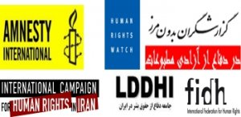

|
|
|
Browsing
Contact Us |
Campaigners |
Face to Face |
Tribune |
Interview |
News |
On the Web |
One Million |
Report
Farsi | Français | German | Italian | Spanish | العربية Also in this section
|
 Iran: Nobel Laureate Shirin Ebadi and Rights Groups Demand Moratorium on ExecutionsWednesday 16 February 2011 View online : RSF Other nations and the UN should speak out against a wave of executions in Iran, the Nobel Peace Laureate Shirin Ebadi and six human rights organizations said today. Shirin Ebadi and the human rights groups called on the Iranian Judiciary and Parliament to institute an immediate moratorium on all executions. At least 86 people have been executed since the start of 2011, according to information received by the six organizations. The groups are Amnesty International, Human Rights Watch, Reporters without Borders, the International Campaign for Human Rights in Iran, the International Federation for Human Rights, and its affiliate, the Iranian League for the Defence of Human Rights. At least eight of those executed in January were political prisoners, convicted of “enmity against God” (moharebeh) for participating in demonstrations, or for their alleged links to opposition groups. “The Iranian authorities have shown that they are no longer content to repress those contesting the re-election of Mahmoud Ahmadinejad by arresting and convicting them - they have shown they will now resort to execution,” Shirin Ebadi said. “They are using the familiar tactic of carrying out political executions at the same time as mass executions of prisoners convicted of criminal offences. These executions may increase if the world is silent,” she added. The increase in executions follows the entry into force in late December 2010 of an amended anti-narcotics law, drafted by the Expediency Council and approved by Supreme Leader Ayatollah Ali Khamenei. Officials have also vowed to step up enforcement measures against drug trafficking. Sixty-seven of those executed in January had been convicted of drug trafficking. The true number of executions may be even higher, the groups said, as there are credible reports that some executions that are not officially announced are taking place in prisons. Another prisoner executed in January was Zahra Bahrami, who had dual Dutch-Iranian nationality. The prosecutor’s office charged her with drug possession and trafficking after she had been arrested for participating in a post-election demonstration. Zahra Bahrami had no right to an appeal, as her death sentence was confirmed by the Prosecutor General’s office. Despite the intervention of the Dutch authorities and calls by the European Union not to execute her, authorities executed her without warning. They did not allow her to meet with her lawyer or provide the legally required 48 hour notice prior to her execution. “The authorities have for years arrested and tried their opponents on politically motivated criminal charges such as possession of alcohol or drugs and illegal possession of arms,” Shirin Ebadi said. “They have imprisoned lawyers and journalists, some of them my colleagues, on such trumped-up charges. Given the sharp rise in executions, the lack of transparency in the Iranian judicial system and recent changes in the narcotics law, there is a great danger that authorities will use ordinary criminal charges to sentence opponents to death.” The recent executions also raise fears for the lives of two men, Saeed Malekpour and Vahid Asghari, believed to have been sentenced to death by Revolutionary Courts following separate unfair trials in which they were accused of “spreading corruption on earth.” On January 30, the Tehran Prosecutor, Abbas Ja’fari Dowlatabadi, announced that the death sentences of two unnamed “administrators of obscene websites” had been sent to the Supreme Court for review. Human rights activists in Iran believe that he was referring to Saeed Malekpour and Vahid Asghari. Saeed Malekpour, a 35-year-old web designer and permanent resident of Canada, was sentenced to death at the end of November 2010 for creating “pornographic” internet sites and “insulting the sanctity of Islam”. Prior to his arrest during a family visit to Iran in 2008, he had created a programme enabling the user to upload photos. That programme had then been used to post pornographic images, which he said had happened without his knowledge. He is alleged to have been tortured while being held for more than a year in solitary confinement in Evin Prison. Vahid Asghari, a 24-year-old information technology student enrolled at a university in India, has also been detained since 2008 and reportedly tortured. He is believed to have been tried in late 2010, but the verdict has never been officially announced. There is also concern surrounding the case of Yousef Nadarkhani. Authorities arrested Yousef Nadarkhani, a pastor in a 400-member church in northern Iran, in October 2009. He was sentenced to death in September 2010 for “apostasy from Islam”, despite the fact that no such crime currently exists under Iran’s penal code. His sentence is currently under appeal before the Supreme Court. On January 26 authorities announced that Sayed Ali Gharabat had been executed for “spreading corruption” and “apostasy” in Karoun Prison, Ahvaz, after he, according to authorities, falsely claimed to have communicated with the Twelfth Imam. Twelver Shi’a Muslims believe that the Twelfth Imam is currently in hiding and will return to earth to bring about justice. Freedom of religion and belief is guaranteed by the International Covenant on Civil and Political Rights (ICCPR), of which Iran is a state party. The covenant includes the right to change one’s religion. Iran executes more people than any country other than China. The hundreds, if not thousands, of prisoners currently on death row may include more than 140 who were under the age of 18 at the time they allegedly committed their offence. International law prohibits the execution of persons for offences that they committed while under 18. To put an end to this killing spree, other nations should demand that Iran immediately end these executions and respect its obligations under international law, Shirin Ebadi and the six human rights organizations said. Iran has made consistent efforts to obstruct scrutiny of the situation in the country by international human rights mechanisms over the past five years. In light of that record, Shirin Ebadi and the organizations called on other nations to take advantage of the forthcoming session of the Human Rights Council to appoint a special envoy of the UN Secretary-General with a mandate to investigate and report on human rights conditions in Iran. Background Since 1979, Iran has executed thousands of men, women and even children for a variety of alleged offences. Article 6 (2) of the ICCPR states: “In countries which have not abolished the death penalty, sentence of death may be imposed only for the most serious crimes in accordance with the law in force at the time of the commission of the crime and not contrary to the provisions of the present Covenant and to the Convention on the Prevention and Punishment of the Crime of Genocide. This penalty can only be carried out pursuant to a final judgement rendered by a competent court.” Iran has never signed the Second Optional Protocol to the ICCPR, aiming at the abolition of the death penalty, and has voted against successive resolutions by the UN General Assembly calling for a moratorium on the use of the death penalty, most recently in December. Human rights organizations, including the six who have joined this statement, have documented numerous human rights abuses during detention and trials. These violations include psychological and physical pressure, amounting to torture, to force prisoners to “confess” to alleged crimes, the use of extended solitary confinement, and lack of access to lawyers. In addition, the Revolutionary Courts hold most of their trials behind closed doors, despite a requirement under Article 168 of the Iranian Constitution that trials for “political” and “press” offences should be open. In many cases, such as Zahra Bahrami’s, lawyers of those sentenced to death are informed of their clients’ executions only after they have taken place, despite the legal requirement for 48 hours’ notice. |